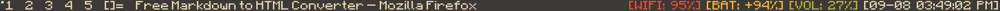
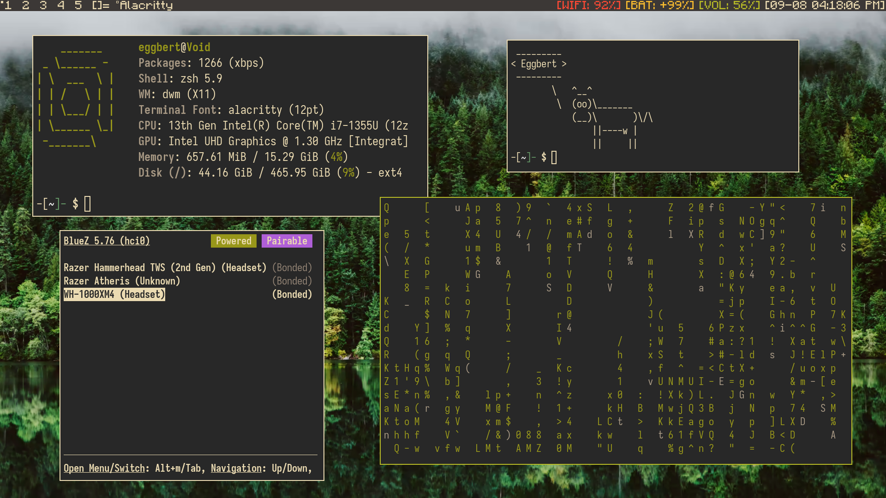
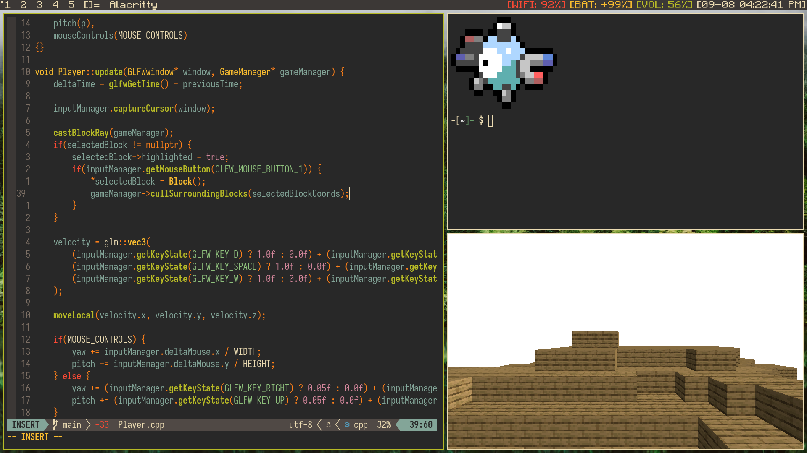

Linux on a Laptop: My Experience (pt. 2)
Hello again! If you're here from Part 1, great! I'm glad you're interested in this nonsense. If not, I would encourage you to read up the post before this as it has a lot of base-level information for my laptop Linux installation and my reasons for choosing Linux specifically, as well as choice of distro and the like. Anyways, this is part 2, where I intend to cover some of the more practical positions and laptop-specifics. For example, I want to talk about dwm, my window manager of choice, and all the tools that I integrate into my workflow. Then I'll just talk a bit about why I love key-binds and key-chords and some laptop-specific obstacles I came across while putting together my system.
One program that I should mention before everything else is fuzzy-pkg. A no-frills, fuzzy-finding, tui frontend for xbps. But when I tell you installing packages has never been easier, I mean it. Everything is a simple search away, and sometimes I don't even consult the internet if I need a specific program. I can fuzzy find a general description like "CAD" or "Minecraft," and I'll get a bunch of results related to CAD software or Minecraft launchers. I say this first because it opens the door to making system configuration so fast and simple.
DWM and Company
dwm is a dynamic tiling window manager that runs off the X.org window server. It embodies many Suckless ideals, as it's one of the team's most popular pieces of software. I won't get into their philosophy here, but I would point you to a small article made by none other than squibid about [why suckless software is important][the link and shit]. At its core, dwm is very simple and just provides key-binds to open a terminal, switch tags, and launch dmenu, if installed. dmenu is an essential, but honestly, seldom used tool. From what I know, it can do a lot more than just launch programs, but by default in dwm, pressing 'mod-p' opens up dmenu in order to launch an application the user has installed. It provides search functionality, although not fuzzy, to easily find the application you need. Now some people may be turned off by the lack of fuzzy search, but this is where all Suckless software shines, in my opinion, patches.
Patches are just file diffs provided by the Suckless team and community in order to add functionality to the base of most Suckless software. This is the main reason why Suckles software comes so "bare bones" out of the box, because the software is a starting point for any users to build their own tool however they like it with patches. I quite like this approach to software. Patches can become unwieldy if many are applied, but if you know your way around a diff and keep a git repo of your changes, it's pretty easy to keep your configs safe.
As for specifics on other programs, I mentioned slstatus which is a status bar (helper) for dwm. Every module is just a simple c program that pulls the data from some external file or script and feeds it into the status bar, specified by the config file. I also took the liberty of applying the Minecraft game font as my dwm bar font, which is always a good conversation starter.

In my bar, I was also able to design a module that will tell me if I have Bluetooth enabled or disabled by using another module as a simple template. I don't actually use this anymore, but I liked the little task anyway. Additionally, the provided volume display didn't work out of the box, but I was easily able to redesign it to work well with my audio setup (I think they have a patch for ALSA). Audio isn't easy on Linux, and to be honest, I ended up installing drivers for anything I saw online until it worked.
Finally, I found it easy to change the provided battery module to also indicate charging status. So now, before my battery percentage, the module also indicates if I'm charging with a +, full battery o, or diminishing power -. Finally, getting colors was as simple as setting some hex values in the config and downloading a quick patch.
God's Grace, Vim (Neovim)
I would be amiss to not mention the tools I use, especially Neovim. Now I want to try as hard as possible not to be an elitist of anything I decide to use. Meaning analyzing the pros and cons of everything and taking other positions into account. Now that being said, Neovim was a large part of the reason why I got into Linux and went head first into using it on my laptop. I knew that the command prompt was an important part of any developer workflow and also figured that if I used a terminal text editor, I would naturally be introduced to that style of work, and I was right.
But what I also didn't realize is just the sheer power behind Vim binds. Even if I use another editor (VS Code, DrRacket, Zed), I need to install a vim binds extension, because after getting used to h, j, k, and l, I never want to go back to those stinky arrow keys or reaching for my mouse again. Especially since I don't adore the trackpad on this ThinkPad T16. I can understand if someone doesn't want to use Vim or Neovim as text editors, but I would also encourage anyone to at least try to use Vim binds for about a week and to give themselves the chance to fall in love with what I find and art form.
In any case, Neovim is a big part of the build and had to be mentioned. I followed the Primeagens build of Neovim using packer as my package manager for plugins before migrating my config to be built on Folke's lazy.nvim. Another program I find myself using a lot in Ranger is a terminal-based file manager and browser. It's pretty simple, and I mostly use it for image previews and moving multiple files at once that I don't want to do with some long mv command. For anyone interested in the plugins I actually use, here is a little preview and a link to my config on GitHub here:
- gruvbox.nvim - I need to say no more.
- telescope.nvim - Essential for navigating projects. Allows for fuzzy finding files names and their contents.
- nvim-treesitter - Syntax highlighting made easy
- ultimate-autopair.nvim - Closes parenthesis, brackets, curly brackets, quotes and it's derivatives.
- Comment.nvim - Comment lines or blocks of code regardless of language.
- lsp-zero.nvim - How does anyone program without LSP and completions?
- oil.nvim - File tree/navigator (NETRW is good too, imo)
Obviously, on top of this, there are some small quality of life plugins and a bunch of keybinds, keychords, and options to make my neovim config my own, but I still hold strong that the binds are the most important part.
Linux Tools & System Configuration
I intended to daily drive Void Linux on my new ThinkPad T16 as I started classes at college, which means things had to work. I couldn't be dropping my battery like a good habit. I especially couldn't be having unstable internet connections while I needed to get work done (FORSHADOWING). This is one of the major drawbacks to what I am doing and an extremely fair argument against Linux or Linux ricing in general. When you buy a Windows laptop or a MacBook, it just works. The default settings are tolerable, the internet connectivity takes minimal fiddling, and connecting to external displays is only hard if you don't get the HDMI right side up on the first try. That being said, doing anything one might consider trivial on other operating systems is usually a learning curve on the custom Linux rice, especially if you're new (I am new). So as you could imagine, using IWD as my network manager didn't play nice with WPA-Enterprise and the custom script my school needs students to run to get their certificates installed.
I spent litteral days trying to fix this issue by editing Python scripts, weird shell scripts, downloading and manually installing certificates, hailing IT with questions, and fumbling with Ethernet wires from the campus shop, all with too little knowledge of wireless certificates and local networking. I tried to ditch IWD and use NetworkManager with wpa-supplicant, and that didn't work either (I think it was just too hard to migrate). This was extremely scary but also fun, and that's where I think the line should be drawn. I AM NOT trying to be an elitist, and I would never recommend a custom Linux rice to someone with the intent to get real work done. There are too many interruptions from working order like audio, video, printing, networking, and software, while all of these and more just work out of the box on every other operating system. But what I will say is if you want to learn about Linux, programming, servers, operating systems, etc., using a custom Linux server is a really good way to do it. I love tinkering with my computer, and unless you do too, a custom Linux driver is a terrible option as an operating system daily driver.
I don't have enough experience with the average Linux desktop environment as a daily driver, but I imagine that a lot of those give you necessities like networking, display management, audio controls, video drivers, and more. I would like to try a DE one day, but I will stick with Void and DWM for now.
I just wanna yap about my rice a little more, and I'll leave some pictures below. First, my key-binds are immaculate, and I feel like a computer wizard for everything I do, which is a great ego boost. I use left alt as my mod key. Here are the binds:
- Mod+Enter -> opens Alacritty
- Mod+P -> open dmenu for launching apps
- Mod+Shift+C -> close focused window
- Mod+Shift+I -> open my internet browser (Firefox)
- Mod+Shift+Y -> open YouTube (in Firefox)
- Mod+Shift+D -> open discord (in Firefox)
- Mod+Shift+M -> open my school email (in Firefox)
- Mod+Shift+T -> open Spotify (in Firefox)
- Mod+Shift+G -> open my GitHub profile (in Firefox)
- Mod+Shift+W -> open an iwgtk, a frontend for iwd (network controls).
- Mod+Shift+S -> Take a screenshot with scrot
- Mod+Shift+Z -> Launch boomer, very cool app for zooming
- Mod+Shift+B -> opens Bluetooth in Alacrity, a Bluetooth connection manager.
- Mod+Shift+P -> opens btop in Alacritty, a process viewer
This isn't all the key-binds. For example, I had to bind my volume controls to Mod+Shift plus left square bracket and right square bracket with a backslash as mute. Then to change the brightness of the backlight, I use just Mod and the same controls. These are the types of compromises using a custom Linux rice requires, but luckily, they don't get in my way much, if at all.
But with this territory comes the slight annoyance of not being able to just give someone else your laptop, and they're familiar with what they're looking at. Using a web browser is about as compliant as it gets to operating another computer. I don't have to give my laptop to others often though, or maybe I haven't been at school long enough to need to.
Gallery
On the left is a little minecraft clone that I made. I talked about it here. I also have random pokemon appear in my shell with a program called pokemon show, which I think I found with pip.

On the bottome left is bluetuith, the Bluetooth connections manager thing I use
